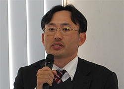
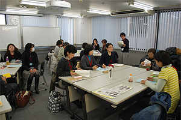

2014年度県内消費者団体地区別交流会が1月20日（火）の川越会場を皮切りにはじまりました。1月28日（水）熊谷会場、2月5日（木）春日部会場の県内3会場での開催となります。
1月20日（火）、川越市の東上パールビルジングで開かれた川越会場には、県域と地域の消費者団体8団体と、埼玉県、新座市、東松山市、和光市からの参加をいただき、24名が参加しました。
埼玉消団連幹事の川上豊子さん（埼玉母親大会連絡会事務局長）の司会で交流会がすすめられました。
地区別交流会は、県内各地域の消費者団体の活動を情報交換し、事例報告を通して、地域の実情に即した活動を考え、消費者活動の活性化につなげていく目的で、埼玉県の委託事業として開催しています。
今年は、昨年の通常国会で成立した改正消費者安全法と地域の見守りネットワークづくりをテーマに、消費者被害をはじめとした消費者の課題と市民の側からの課題解決に向けた連携・協働を考えるものとして開催しました。
最初に、「改正消費者安全法に基づく見守り～次のステップは地域連携！」と題して、弁護士の久保田和志さんを講師に学習しました。

久保田和志弁護士
久保田さんは、埼玉県における消費生活相談が平成25年度は5万件を超え、増加に転じたこと、消費者庁の調べでも、平成10年から20年の推移で消費生活相談件数は129％増加している一方、地方消費者行政予算は39％、消費者行政担当職員は45％減少していると指摘しました。
平成20年度から25年度にすすめられた国の地方消費者行政活性化基金により、予算、相談員の増加が図られたものの、「地方公共団体は、未だ消費者行政充実の政策判断に至っていない」と話しました。
こうした中、昨年6月、消費者安全法が改正され、これまでの行政による消費者啓発・被害防止に留まらず、地域連携の推進、消費者市民の育成が打ち出され、行政機関と協力員・協力団体、消費者市民が一体となった「地域連携型」の消費者行政充実を図ろうとする法改正の要点を話しました。
訪問販売や電話勧誘販売では高齢者被害が多数を占め、地域での見守りが求められている中、埼玉弁護士会でおこなった市町村アンケート調査では、市町村で見守り連絡体制は過半数に届かず、設置されていても高齢者福祉等の課題で手一杯で、十分でないとし、私たちの課題として、 地域の見守りネットワークへの参加、
地域の見守りネットワークへの参加、 行政による地域の消費者市民育成と活動支援を求めること、
行政による地域の消費者市民育成と活動支援を求めること、 消費者安全確保地域協議会・消費者教育推進協議会の設置を求めること、
消費者安全確保地域協議会・消費者教育推進協議会の設置を求めること、 消費者行政担当職員の増員・資質向上を求めることの4つを挙げました。
消費者行政担当職員の増員・資質向上を求めることの4つを挙げました。
講演に続いて、地域でおこなわれている高齢者のサポート事例・消費者被害の現状が報告されました。
上尾市で保健・医療・福祉・地域安全などに取り組んでいるNPO法人助け合い村の高野 保さん、金子恵子さんから、軽度認知症の方への相続時の不当請求の事例、認知症の方への生活サポートをめぐるトラブルの事例、一人暮らしの高齢者の見守りなど、実際の事例が紹介されました。そのほか、川越市ほかの高齢者見守りの現状と事例について、事務局から報告されました。
| NPO法人助け合い村 高野 保さん | NPO法人助け合い村 金子恵子さん |
後段は、交流会として、講演と活動の報告・紹介を受けて、私たちでできる見守りをテーマに、3つのグループで話し合い、交流しました。
＜グループ交流の模様＞
|  |
2014年度 県内消費者団体地区別交流会
これからの開催予定
■熊谷会場
- 日時：
- 1月28日（水）13:30～16:00
- 会場：
- 熊谷市男女共同参画推進センターハートピア会議室1・2
- 熊谷市筑波三丁目202番地 ティアラ21・4階
- 交通：
- JR高崎線「熊谷駅」下車
■春日部会場
- 日時：
- 2月5日（木）13:30～16:00
- 会場：
- 春日部市市民文化会館 大会議室1
- 春日部市粕壁東二丁目8番61号
- 交通：
- 東武野田線「春日部駅」東口下車・徒歩約13分
お問い合わせ
埼玉県消費者団体連絡会 事務局 電話 048－844－8971（埼玉県生協連内）